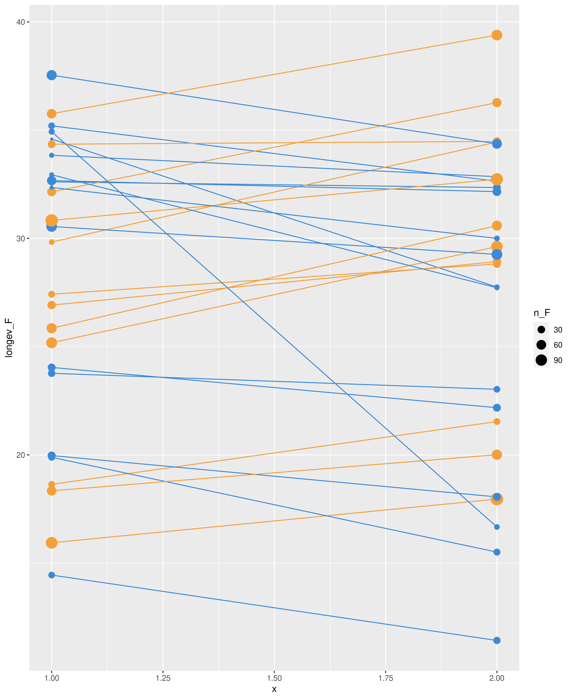
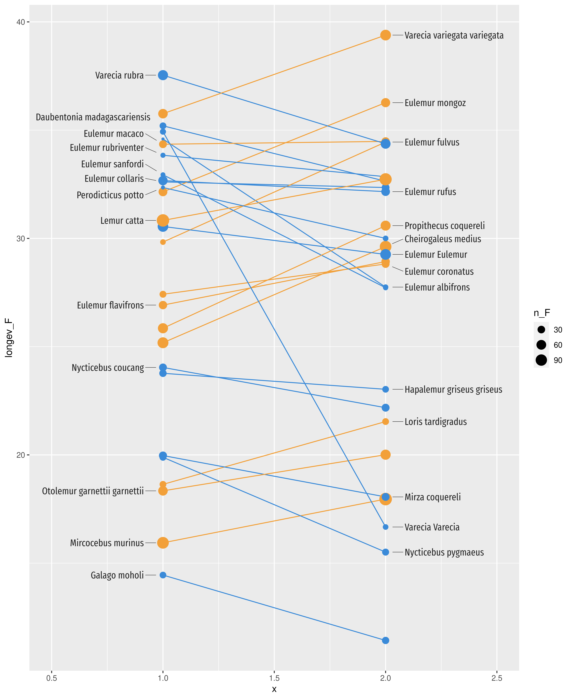
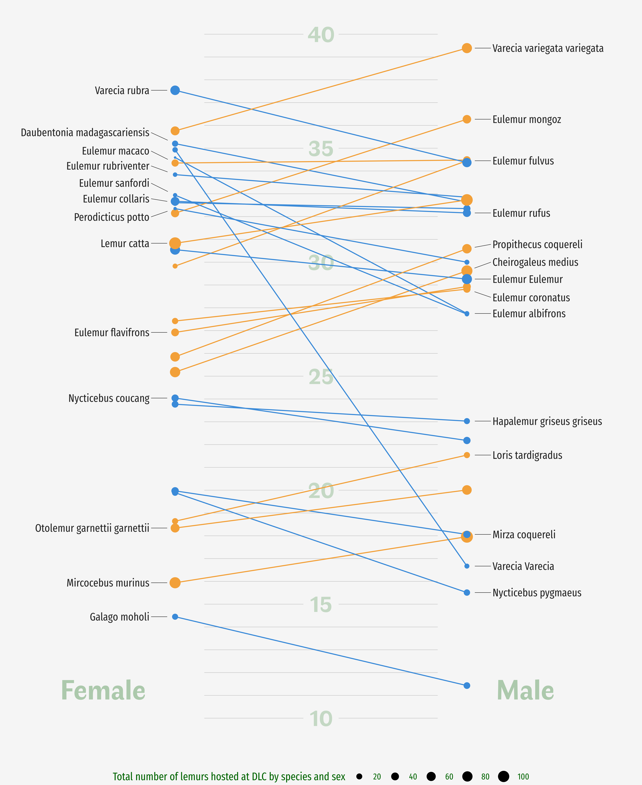

About
This page showcases the work of Georgios Karamanis, built for the TidyTuesday initiative. You can find the original code on his Github repository here.
Thanks to him for accepting sharing his work here! Thanks also to Tomás Capretto who split the original code into this step-by-step guide! 🙏🙏
As a teaser, here is the plot we’re gonna try building:

Load packages
Today’s chart uses the tidyverse and ggrepel. The tidyverse is going to load the very well known dplyr and ggplot2 libraries, among others, and ggrepel will make it extremely easy to automatically position labels.
library(tidyverse)
library(ggrepel)This post uses the Fira Sans Compressed and the Faune fonts. If you are a little unsure about how to work with custom fonts in R, this post is for you.
Load and prepare the data
The data for this post originally comes from the Duke Lemur Center and was cleaned by Jesse Mostipak. This guide uses the dataset released for the TidyTuesday initiative on the week of 2021-08-24. You can find the original announcement and more information about the data here. Thank you all for making this work possible! 🙏🙏
Two datasets are needed today. The first one, called lemurs, has information about the lemurs themselves, while taxonomy is going to be helpful to obtain the latin names of the species.
lemurs <- readr::read_csv(
"https://raw.githubusercontent.com/rfordatascience/tidytuesday/master/data/2021/2021-08-24/lemur_data.csv"
)
taxonomy <- readr::read_csv(
"https://raw.githubusercontent.com/rfordatascience/tidytuesday/master/data/2021/2021-08-24/taxonomy.csv"
)Now let’s compute the largest age recorded and the number of animals by species and sex:
lem_longev <- lemurs %>%
# Keep unique combinations of the following variables.
distinct(dlc_id, taxon, sex, age_max_live_or_dead_y) %>%
# Drop observations with Not Determined sex
filter(sex != "ND") %>%
# Compute highest age and the number of lemurs for each specie and sex
group_by(taxon, sex) %>%
summarise(longev = max(age_max_live_or_dead_y, na.rm = TRUE), n = n()) %>%
ungroup() %>%
# Pivot the data so we have two columns for each 'age_max' and 'count',
# one if for Females and the other is for Males
pivot_wider(id_cols = taxon, names_from = sex, values_from = c(longev, n)) %>%
# Create a column with the colors.
# When female live longer, use blue. Otherwise, use orange.
group_by(taxon) %>%
mutate(
color = if_else(longev_F > longev_M, "#3A8AD8", "#F2A039"),
taxon_id = cur_group_id()
) %>%
ungroup() %>%
# Clean one of the taxon names that is misspelled
mutate(taxon = if_else(taxon == "CMED", "CMEAD", taxon)) %>%
# Merge aggregated data with the taxonomy to obtain species names
left_join(taxonomy)Let’s store the names of the font families in two variables
family1 = "Fira Sans Compressed"
family2 = "Faune"Basic parallel plot
Let’s get started by plotting a very simple parallel plot. This plot is made of two components: segments and points.
plt <- ggplot(lem_longev) +
geom_segment(aes(y = longev_F, yend = longev_M, x = 1, xend = 2, color = color)) +
geom_point(aes(y = longev_F, x = 1, color = color, size = n_F)) +
geom_point(aes(y = longev_M, x = 2, color = color, size = n_M)) +
scale_color_identity()
plt
Add labels
That was a pretty good start. Now it’s time to add the labels for the species. This is when the chart gets really insightful because the labels allow us to identify each species and compare them.
Fortunately, there’s ggrepel which is going to make extremely easy to automatically adjust the position of the labels.
Let’s do it!
plt <- plt +
geom_text_repel(
data = subset(lem_longev, taxon_id %% 2 != 0),
aes(y = longev_M, x = 2, label = latin_name),
nudge_x = 0.1, hjust = 0, direction = "y", family = family1,
point.padding = 1, segment.size = 0.2, color = "grey15"
) +
geom_text_repel(
data = subset(lem_longev, taxon_id %% 2 == 0),
aes(y = longev_F, x = 1, label = latin_name),
nudge_x = -0.1, hjust = 1, direction = "y", family = family1,
point.padding = 1, segment.size = 0.2, color = "grey15"
) +
scale_x_continuous(limits = c(0.5, 2.5))
plt
It’s worth remarking some arguments in the geom_text_repel() function. First, direction = "y". This tells the text can only be shifted in the vertical direction, which ensures the labels are horizontally aligned. Then we also have nudge_x, which adjust where the text starts horizontally, and hjust that determines if the text is left aligned (hjust=0) or right aligned (hjust=1).
Clean and customize layout
The next step is to add some annotations. First, horizontal lines and labels to indicate the ages on the vertical axis. Then, other labels on the sides telling which side represents which sex.
This step is also about customizing the legend. This legend is going to tell what is being represented by the dot sizes.
Finally, the following chunk also changes the background color and removes the tick marks from both axis.
Notice the plot is built from scratch again. This is because ggplot2 uses something known as the painter model, which means that elements are drawn in the same order they are included in the plot. In other words, if you want some labels to be placed behind the segments, you need to add them earlier, as follows:
plt <- ggplot(lem_longev) +
# Add horizontal lines in the bacground representing the years axis
annotate(
"segment", x = 1.1, xend = 1.9,
y = seq(10, 40, by = 1), yend = seq(10, 40, by = 1),
alpha = 0.2, size = 0.2
) +
# Add points with the same color than the background. These are the
# background of the text indicating the ages
annotate(
"point", x = 1.5, y = seq(10, 40, by = 5),
size = 16, color = "grey96"
) +
# Add the ages
annotate(
"text", x = 1.5, y = seq(10, 40, by = 5),
label = seq(10, 40, by = 5), size = 8, alpha = 0.2,
family = family2, fontface = "bold", color = "darkgreen"
) +
# Add annotation indicating which sex is on each side
annotate(
"text", x = c(0.9, 2.1), y = 11.25,
label = c("Female", "Male"), hjust = c(1, 0), family = family2,
fontface = "bold", size = 10, alpha = 0.3, color = "darkgreen"
) +
# Same lollipops as above
geom_segment(aes(y = longev_F, yend = longev_M, x = 1, xend = 2, color = color)) +
geom_point(aes(y = longev_F, x = 1, color = color, size = n_F)) +
geom_point(aes(y = longev_M, x = 2, color = color, size = n_M)) +
# Same labels as above
geom_text_repel(
data = subset(lem_longev, taxon_id %% 2 != 0),
aes(y = longev_M, x = 2, label = latin_name),
nudge_x = 0.1, hjust = 0, direction = "y", family = family1,
point.padding = 1, segment.size = 0.2, color = "grey15"
) +
geom_text_repel(
data = subset(lem_longev, taxon_id %% 2 == 0),
aes(y = longev_F, x = 1, label = latin_name),
nudge_x = -0.1, hjust = 1, direction = "y", family = family1,
point.padding = 1, segment.size = 0.2, color = "grey15"
) +
scale_x_continuous(limits = c(0.5, 2.5)) +
scale_color_identity() +
# This scale determine how the legend for the size is created
scale_size_continuous(
range = c(0.5, 5),
breaks = seq(0, 120, by = 20),
name = "Total number of lemurs hosted at DLC by species and sex"
) +
# Use a completely empty theme
theme_void() +
# Build a theme from scratch
theme(
# Set background color to grey96
plot.background = element_rect(fill = "grey96", color = NA),
# Send legend to bottom
legend.position = "bottom",
# Customize text of individual elements in the legend
legend.text = element_text(family = family1, color = "darkgreen"),
# Customize text of the legend title
legend.title = element_text(family = family1, color = "darkgreen"),
# Customize margin, the 10 is added to the top of the legend.
legend.margin = margin(10, 0, 0, 0)
)
plt
Final chart
The chart above is just one step away from being publication-ready. This final touch consists of adding a good title and a subtitle to clearly describe what you see in the chart, and a caption giving appropriate credit to the author of the visualization and the people who made the data available.
plt <- plt +
labs(
title = "Longest lived lemurs at the Duke Lemur Center",
subtitle = "Maximum age recorded in years (living or dead), by species and sex",
caption = "Source: Duke Lemur Center · Graphic: Georgios Karamanis"
) +
theme(
plot.title = element_text(
hjust = 0.5, size = 28, family = family2,
face = "bold", color = "darkgreen"
),
plot.subtitle = element_text(
margin = margin(7, 0, 0, 0), hjust = 0.5,
size = 18, family = family1, color = "grey30"
),
plot.caption = element_text(
hjust = 0.5, size = 10, color = "grey30", family = family1
),
plot.margin = margin(20, 20, 20, 20)
)
plt
It’s been so exciting to work on this chart! 🤩